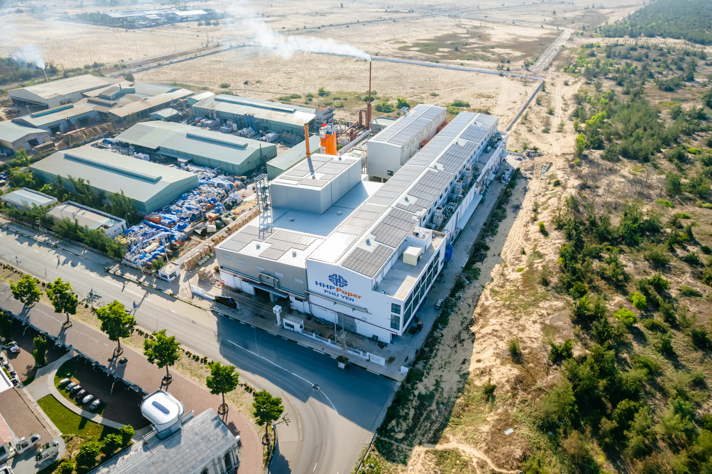
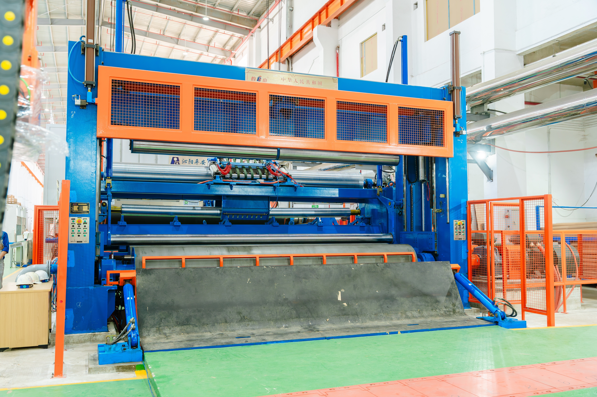
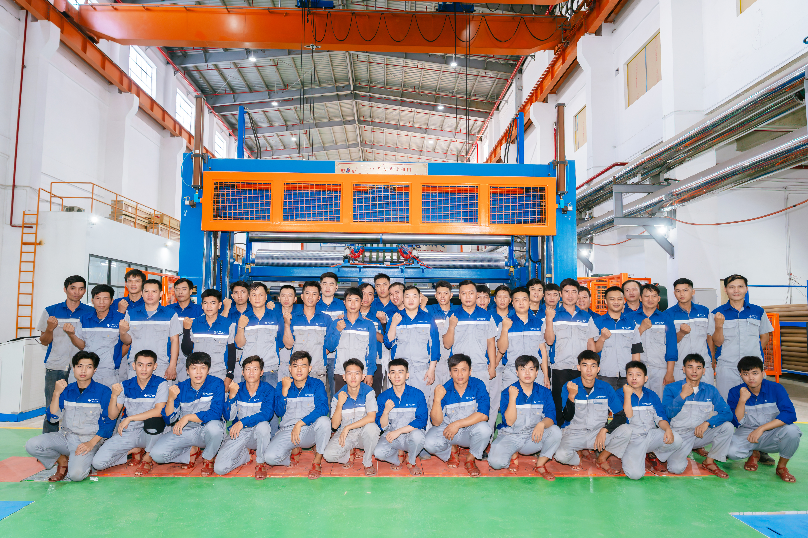

NHÀ MÁY TẠI MIỀN BẮC VÀ MIỀN TRUNG
TỔNG CÔNG SUẤT: 228.000 Tấn/Năm
Nhà máy · Phía Bắc
HHPPaper Hải Phòng
tấn/năm
Dải định lượng
135–220 g/m²
Khổ giấy
4.200 mm
Tốc độ sản xuất
500 m/phút
Diện tích
52.800 m²
Công nghệ & dây chuyền
Động cơ · Năng lượng
- Hệ thống quản lý chất lượng ISO 9001:2015; quản lý môi trường ISO 14001:2015.
- Hệ truyền động & điều khiển từ ABB và Siemens (Châu Âu).
- Vòng bi cặp ép chính hãng SKF (Thụy Điển); các lô suốt từ NSK (Nhật).
Dây chuyền · Tự động hóa
- Dây chuyền sản xuất hiện đại, tự động hóa 95%.
- Linh hoạt chạy 3 loại sản phẩm — Giấy Medium, Testliner và Kraftliner — với hệ thống 3 lưới dài, 2 hệ xử lý bột riêng biệt (UKP & OCC), hệ phân tán nhiệt và tách riêng nước trắng của 3 lớp giấy.
- Hệ chuẩn bị bột với phân tán nhiệt từ Voith (Châu Âu); lọc đĩa thu hồi bột & làm sạch nước trắng từ Andritz (Châu Âu).
- Hòm phun bột lưới back dạng thủy lực có pha loãng — tự động điều chỉnh định lượng & độ dày lớp giấy.
Ép keo · Ép chồng
- Tách dị vật bằng nhiều cấp sàng và lọc cát cho bột sợi ngắn, trung và dài — cho sản phẩm độ sạch cao.
- Vận hành & kiểm soát toàn bộ thông số trên máy tính qua hệ thống DCS, thiết bị đo lường tự động hóa từ các hãng hàng đầu Châu Âu.

Nhà máy · Phía Nam
HHPPaper Phú Yên
tấn/năm
Dải định lượng
80–130 g/m²
Khổ giấy
4.600 mm
Tốc độ sản xuất
650 m/phút
Diện tích
15.000 m²
Công nghệ & dây chuyền
Động cơ · Năng lượng
- Hệ truyền động dùng motor nam châm vĩnh cửu — giúp tiết kiệm năng lượng.
- Hệ thống điện năng lượng mặt trời công suất 853 KWp.
Dây chuyền · Tự động hóa
- Dây chuyền đồng bộ, mới hoàn toàn — thiết bị xuất xứ Châu Âu & các nhà cung cấp top đầu Trung Quốc; tốc độ tới 650 m/phút, tự động hóa kiểm soát từ đầu đến cuối dây chuyền, đạt mức 98%.
- Thiết kế các tuyến nước, bồn bể, bột mạch lạc, rõ ràng, đúng chuẩn — tối ưu việc loại bỏ tạp chất.
Ép keo · Ép chồng
- Hệ thống ép keo dạng Film size chạy được nồng độ tinh bột cao 12–15%.
- Hệ thống ép chồng 4 lô 3 nip kết hợp nhiều lô VAC — phù hợp chạy giấy mỏng.

Quy trình sản xuất xanh
VÒNG TUẦN HOÀN, TỪ THU HỒI ĐẾN THÀNH PHẨM
01
Thu hồi
Thu gom giấy thu hồi (OCC) trên toàn quốc.
02
Nghiền & lọc
Nghiền bột với nước tuần hoàn đã xử lý.
03
Xeo giấy
Sản xuất giấy bằng năng lượng sạch.
04
Giấy thành phẩm
Cuộn giấy đạt chuẩn cho bao bì.
05
Trở lại vòng tuần hoàn
Bao bì đã dùng quay lại để tái chế.
Chuỗi giá trị thật sự tuần hoàn — mục tiêu không rác chôn lấp
Hình ảnh nhà máy
HÌNH ẢNH SẢN XUẤT & DÂY CHUYỀN



